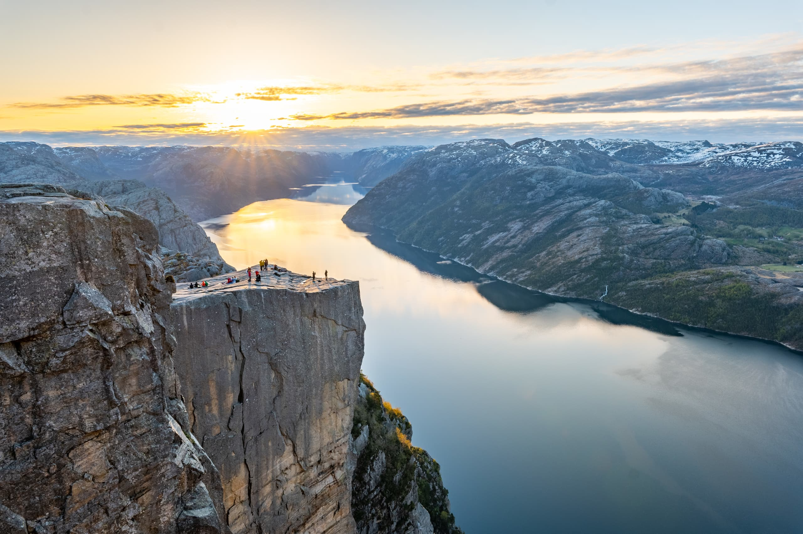
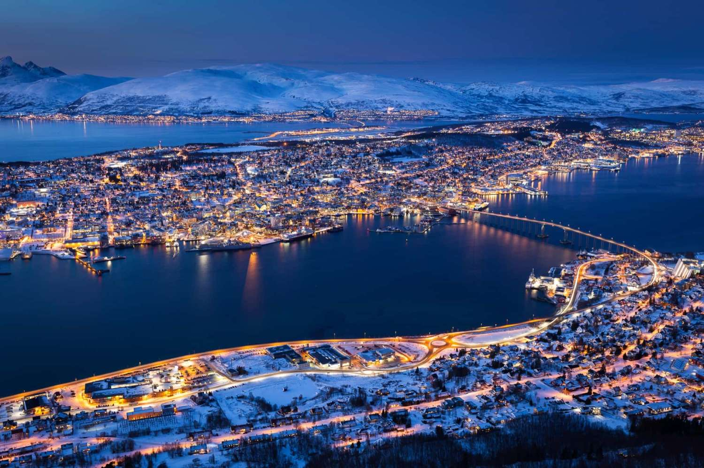
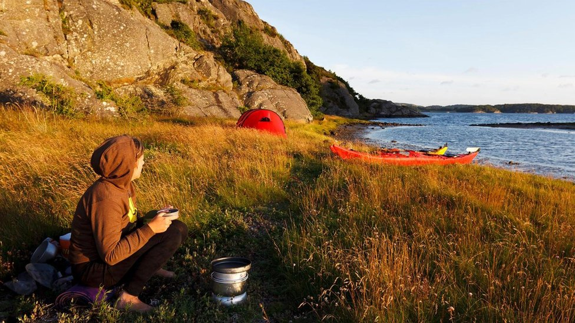
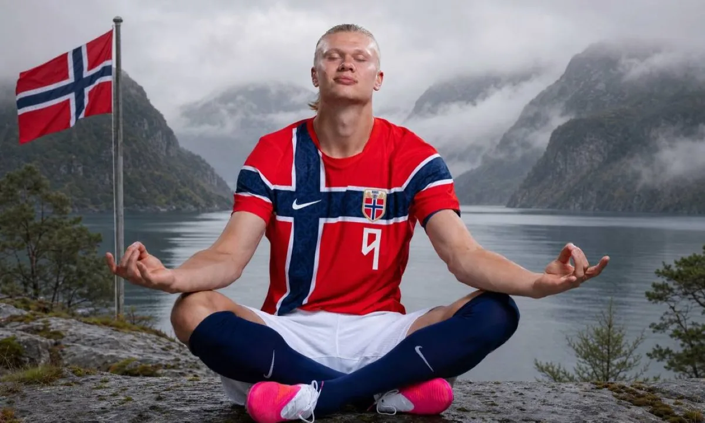

Guía Turística y Cultural de Noruega
Descubre los lugares más impresionantes y la riqueza cultural del país nórdico.
Lugares Turísticos

Geirangerfjord
Declarado Patrimonio de la Humanidad por la UNESCO, es famoso por sus aguas de color azul profundo, acantilados imponentes y cascadas icónicas como "Las Siete Hermanas".
Más información...
Islas Lotofen
Un archipiélago conocido por sus picos montañosos dramáticos que emergen directamente del mar, sus pintorescas casas rojas de pescadores (rorbuer) y sus playas vírgenes en el Ártico.
Más información...
Preikestolen
Una meseta rocosa vertiginosa suspendida a más de 600 metros sobre el fiordo Lysefjord. Es una de las rutas de senderismo más célebres y fotografiadas de Noruega.
Más información...
Tromsø
Conocida como la "Capital del Ártico", es uno de los mejores destinos del mundo para contemplar las Auroras Boreales en invierno y experimentar el Sol de Medianoche en verano.
Más información...Aspectos Culturales Destacados
El concepto de Friluftsliv
Se traduce literalmente como "vida al aire libre". Es una filosofía de vida profundamente arraigada en la cultura noruega que fomenta la conexión y el respeto con la naturaleza, sin importar las condiciones del clima.
Más información...
Herencia Vikinga
Los orígenes históricos del país están fuertemente ligados a la era vikinga. Esta influencia perdura en su mitología, la navegación y las réplicas de iglesias de madera (Stavkirke) construidas en la Edad Media.
Más información...La Cultura Sami
Los Samis son el pueblo indígena del norte de Escandinavia. Conservan su propio idioma, el arte del canto tradicional (Joik) y una historia milenaria vinculada al pastoreo de renos.
Más información...
Día de la Constitución (17 de mayo)
Es la festividad nacional más relevante de Noruega. La gente sale a las calles vistiendo el Bunad (traje folclórico tradicional) para celebrar con desfiles infantiles, banderas y música.
Más información...